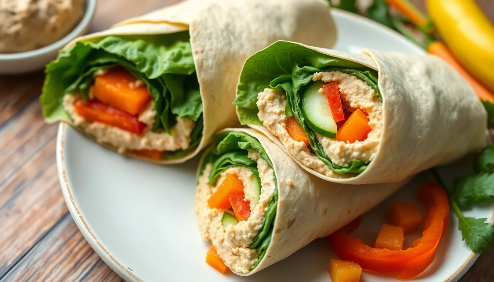

Hummus Wraps
Prep time: 10 minutes - Cook time: 0 minutes - Total time: 10 minutes
Estimated total cost: $9.80 - Estimated cost per serving: $2.45 - Serves: 4

Ingredients
- 4 large tortillas or wraps - $2.00
- 1 cup hummus - $2.50
- 1 cucumber, sliced thin - $0.80
- 2 carrots, shredded - $0.50
- 2 cups lettuce or spinach - $1.20
- 1 bell pepper, sliced thin - $1.50
- Optional: lemon juice or hot sauce - $0.20
Estimated ingredient total: $8.50 to $8.70
Displayed website estimate: $9.80
Detailed Instructions
- Lay the tortillas flat on a clean surface.
- Spread about 1/4 cup hummus across the center of each wrap, leaving a little space around the edges.
- Layer the lettuce or spinach on top of the hummus.
- Add cucumber, carrot, and bell pepper evenly across all four wraps.
- Add a squeeze of lemon juice or a few drops of hot sauce if you want extra flavor.
- Fold in the sides of each wrap, then roll tightly from the bottom up.
- Slice in half and serve right away, or wrap tightly for later.
Helpful Notes
- These work well for packed lunches.
- Use whatever vegetables are cheapest that week.
- You can add canned chickpeas for extra protein.
Price note: Ingredient prices can vary by store, brand, and region, so these are planning estimates rather than exact totals.